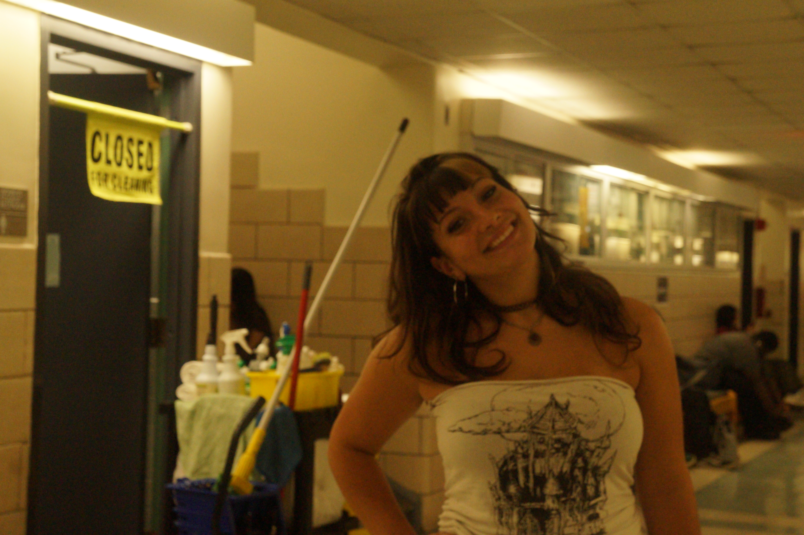

Fashion is often presented through polished photographs and finished looks, but there is an entire creative process that exists before the final image. I plan for my work to explore the behind-the-scenes aspects of fashion, focusing on the preparation, styling, and details that help create a complete look. Things like clothing, accessories, makeup and styling all contribute to the whole image of fashion. By photographing these elements before they come together, the work draws attention to the decisions that need to be made when creating a look. Garments being arranged, accessories being selected, and pieces waiting to be worn can become photographs of their own, allowing the process of styling to be seen as part of the artwork rather than something that happens before it.
I admire how the choosing of a garment is an art in and of itself. Of course when the piece is worn, it holds a specific type of beauty, but the art of deciding what goes together and the work that goes into making these garments is something that really interests me. I hope to capture the stylistic process through photos and montages to explore the way designers and stylists practice their craft. As an avid sewer myself, I think it's important to see the work actually goes into the clothing, and appreciate the labor and time it takes. I'd like to explore a new way for clothing to be appreciated. My goal is to photograph or create montages of the process behind big fashion scenes.